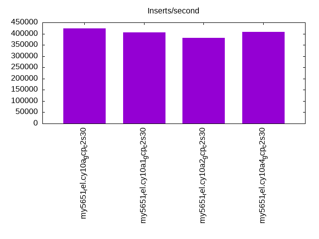
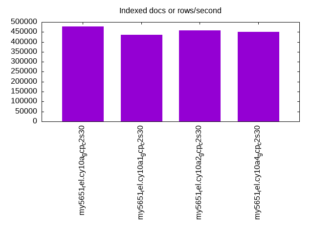
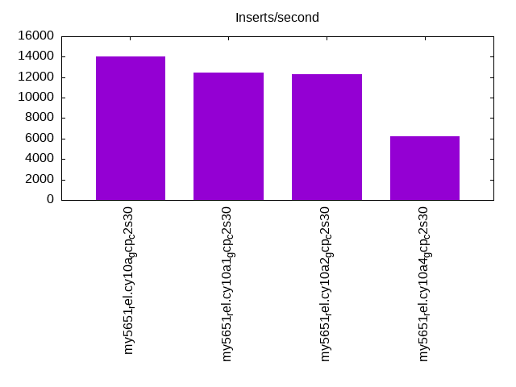
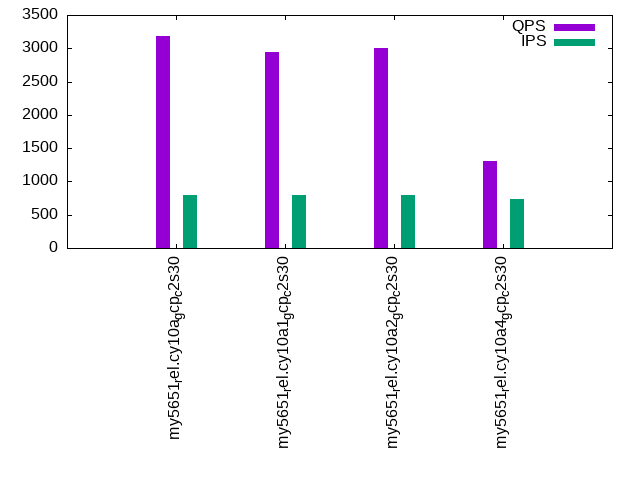
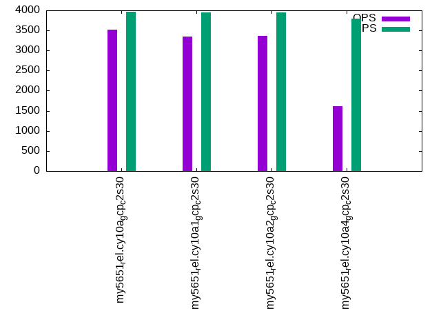
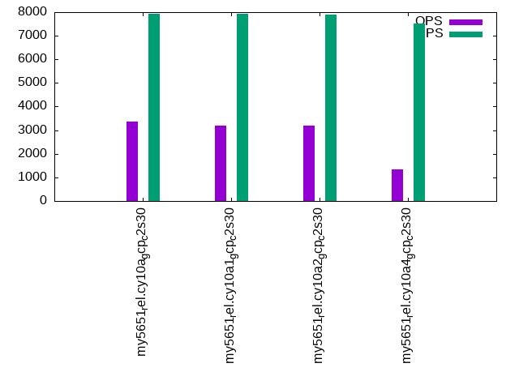

This is a report for the insert benchmark with 4000M docs and 8 client(s). It is generated by scripts (bash, awk, sed) and Tufte might not be impressed. An overview of the insert benchmark is here and a short update is here. Below, by DBMS, I mean DBMS+version.config. An example is my8020.c10b40 where my means MySQL, 8020 is version 8.0.20 and c10b40 is the name for the configuration file.
The test server is a c2-standard-30 from GCP with 15 cores, hyperthreads disabled, 120G RAM, XFS + SW RAID 0 on 4 NVMe devices (1.5TB). The benchmark was run with 8 client and there were 1 or 3 connections per client (1 for queries or inserts without rate limits, 1+1 for rate limited inserts+deletes). There are 8 tables, client per table. It loads 4000M rows without secondary indexes, creates secondary indexes, then inserts 80M rows with a delete per insert to avoid growing the table. It then does 3 read+write tests for 1800s each that do queries as fast as possible with 100, 500 and then 1000 inserts/second/client concurrent with the queries and 1000 deletes/second to avoid growing the table. The database is larger than memory.
The tested DBMS are:
The numbers are inserts/s for l.i0 and l.i1, indexed docs (or rows) /s for l.x and queries/s for q*.2. The values are the average rate over the entire test for inserts (IPS) and queries (QPS). The range of values for IPS and QPS is split into 3 parts: bottom 25%, middle 50%, top 25%. Values in the bottom 25% have a red background, values in the top 25% have a green background and values in the middle have no color. A gray background is used for values that can be ignored because the DBMS did not sustain the target insert rate. Red backgrounds are not used when the minimum value is within 80% of the max value.
| dbms | l.i0 | l.x | l.i1 | q100.1 | q500.1 | q1000.1 |
|---|---|---|---|---|---|---|
| my5651_rel.cy10a_gcp_c2s30 | 424133 | 478195 | 14035 | 3183 | 3513 | 3362 |
| my5651_rel.cy10a1_gcp_c2s30 | 406752 | 435931 | 12469 | 2942 | 3343 | 3184 |
| my5651_rel.cy10a2_gcp_c2s30 | 380445 | 457939 | 12317 | 3005 | 3369 | 3209 |
| my5651_rel.cy10a4_gcp_c2s30 | 407000 | 451275 | 6238 | 1309 | 1612 | 1330 |
This table has relative throughput, throughput for the DBMS relative to the DBMS in the first line, using the absolute throughput from the previous table. Values less than 0.95 have a yellow background. Values greater than 1.05 have a blue background.
| dbms | l.i0 | l.x | l.i1 | q100.1 | q500.1 | q1000.1 |
|---|---|---|---|---|---|---|
| my5651_rel.cy10a_gcp_c2s30 | 1.00 | 1.00 | 1.00 | 1.00 | 1.00 | 1.00 |
| my5651_rel.cy10a1_gcp_c2s30 | 0.96 | 0.91 | 0.89 | 0.92 | 0.95 | 0.95 |
| my5651_rel.cy10a2_gcp_c2s30 | 0.90 | 0.96 | 0.88 | 0.94 | 0.96 | 0.95 |
| my5651_rel.cy10a4_gcp_c2s30 | 0.96 | 0.94 | 0.44 | 0.41 | 0.46 | 0.40 |
This lists the average rate of inserts/s for the tests that do inserts concurrent with queries. For such tests the query rate is listed in the table above. The read+write tests are setup so that the insert rate should match the target rate every second. Cells that are not at least 95% of the target have a red background to indicate a failure to satisfy the target.
| dbms | q100.1 | q500.1 | q1000.1 |
|---|---|---|---|
| my5651_rel.cy10a_gcp_c2s30 | 789 | 3965 | 7930 |
| my5651_rel.cy10a1_gcp_c2s30 | 789 | 3954 | 7916 |
| my5651_rel.cy10a2_gcp_c2s30 | 789 | 3954 | 7899 |
| my5651_rel.cy10a4_gcp_c2s30 | 734 | 3797 | 7508 |
| target | 800 | 4000 | 8000 |
l.i0: load without secondary indexes. Graphs for performance per 1-second interval are here.
Average throughput:
Insert response time histogram: each cell has the percentage of responses that take <= the time in the header and max is the max response time in seconds. For the max column values in the top 25% of the range have a red background and in the bottom 25% of the range have a green background. The red background is not used when the min value is within 80% of the max value.
| dbms | 256us | 1ms | 4ms | 16ms | 64ms | 256ms | 1s | 4s | 16s | gt | max |
|---|---|---|---|---|---|---|---|---|---|---|---|
| my5651_rel.cy10a_gcp_c2s30 | 0.158 | 99.517 | 0.141 | 0.169 | 0.014 | nonzero | nonzero | nonzero | 5.979 | ||
| my5651_rel.cy10a1_gcp_c2s30 | 0.181 | 98.759 | 0.869 | 0.174 | 0.014 | 0.002 | nonzero | nonzero | 11.323 | ||
| my5651_rel.cy10a2_gcp_c2s30 | 0.136 | 98.988 | 0.289 | 0.564 | 0.019 | 0.002 | 0.001 | nonzero | 5.916 | ||
| my5651_rel.cy10a4_gcp_c2s30 | 0.211 | 99.239 | 0.344 | 0.190 | 0.012 | 0.004 | 0.001 | nonzero | 5.616 |
Performance metrics for the DBMS listed above. Some are normalized by throughput, others are not. Legend for results is here.
ips qps rps rmbps wps wmbps rpq rkbpq wpi wkbpi csps cpups cspq cpupq dbgb1 dbgb2 rss maxop p50 p99 tag 424133 0 3330 13.0 2021.6 119.1 0.008 0.031 0.005 0.287 89571 42.6 0.211 15 263.1 391.6 85.7 5.979 54141 13898 4000m.my5651_rel.cy10a_gcp_c2s30 406752 0 3185 12.4 375.4 111.0 0.008 0.031 0.001 0.279 84974 40.6 0.209 15 263.1 391.6 85.7 11.323 53542 0 4000m.my5651_rel.cy10a1_gcp_c2s30 380445 0 2980 11.6 1846.0 107.7 0.008 0.031 0.005 0.290 81170 39.1 0.213 15 263.1 391.6 85.7 5.916 52244 0 4000m.my5651_rel.cy10a2_gcp_c2s30 407000 0 3188 12.5 419.6 108.6 0.008 0.031 0.001 0.273 89432 41.5 0.220 15 263.1 391.6 85.7 5.616 52843 0 4000m.my5651_rel.cy10a4_gcp_c2s30
l.x: create secondary indexes.
Average throughput:
Performance metrics for the DBMS listed above. Some are normalized by throughput, others are not. Legend for results is here.
ips qps rps rmbps wps wmbps rpq rkbpq wpi wkbpi csps cpups cspq cpupq dbgb1 dbgb2 rss maxop p50 p99 tag 478195 0 2714 349.3 5299.5 594.0 0.006 0.748 0.011 1.272 14859 33.0 0.031 10 542.2 670.7 85.7 0.002 NA NA 4000m.my5651_rel.cy10a_gcp_c2s30 435931 0 1095 380.3 2411.3 524.6 0.003 0.893 0.006 1.232 10799 33.2 0.025 11 542.2 670.7 85.7 0.002 NA NA 4000m.my5651_rel.cy10a1_gcp_c2s30 457939 0 2595 381.0 4514.0 550.2 0.006 0.852 0.010 1.230 11723 32.9 0.026 11 542.2 670.7 85.7 0.002 NA NA 4000m.my5651_rel.cy10a2_gcp_c2s30 451275 0 1059 380.6 2431.8 531.0 0.002 0.864 0.005 1.205 18314 33.4 0.041 11 542.2 670.7 85.7 0.003 NA NA 4000m.my5651_rel.cy10a4_gcp_c2s30
l.i1: continue load after secondary indexes created. Graphs for performance per 1-second interval are here.
Average throughput:
Insert response time histogram: each cell has the percentage of responses that take <= the time in the header and max is the max response time in seconds. For the max column values in the top 25% of the range have a red background and in the bottom 25% of the range have a green background. The red background is not used when the min value is within 80% of the max value.
| dbms | 256us | 1ms | 4ms | 16ms | 64ms | 256ms | 1s | 4s | 16s | gt | max |
|---|---|---|---|---|---|---|---|---|---|---|---|
| my5651_rel.cy10a_gcp_c2s30 | 0.904 | 59.370 | 28.048 | 11.558 | 0.119 | 0.001 | nonzero | 4.794 | |||
| my5651_rel.cy10a1_gcp_c2s30 | 1.244 | 54.555 | 31.108 | 12.752 | 0.340 | nonzero | nonzero | 4.634 | |||
| my5651_rel.cy10a2_gcp_c2s30 | 1.654 | 51.832 | 33.421 | 12.786 | 0.306 | nonzero | nonzero | 4.805 | |||
| my5651_rel.cy10a4_gcp_c2s30 | 3.477 | 44.458 | 28.958 | 16.567 | 6.522 | 0.017 | 3.651 |
Delete response time histogram: each cell has the percentage of responses that take <= the time in the header and max is the max response time in seconds. For the max column values in the top 25% of the range have a red background and in the bottom 25% of the range have a green background. The red background is not used when the min value is within 80% of the max value.
| dbms | 256us | 1ms | 4ms | 16ms | 64ms | 256ms | 1s | 4s | 16s | gt | max |
|---|---|---|---|---|---|---|---|---|---|---|---|
| my5651_rel.cy10a_gcp_c2s30 | 6.144 | 81.264 | 12.463 | 0.127 | 0.001 | 0.001 | nonzero | 4.080 | |||
| my5651_rel.cy10a1_gcp_c2s30 | 8.205 | 75.625 | 16.000 | 0.169 | nonzero | nonzero | 3.948 | ||||
| my5651_rel.cy10a2_gcp_c2s30 | 8.022 | 73.389 | 18.365 | 0.224 | nonzero | nonzero | nonzero | 4.013 | |||
| my5651_rel.cy10a4_gcp_c2s30 | 12.832 | 58.379 | 25.727 | 3.045 | 0.015 | 0.001 | 2.649 |
Performance metrics for the DBMS listed above. Some are normalized by throughput, others are not. Legend for results is here.
ips qps rps rmbps wps wmbps rpq rkbpq wpi wkbpi csps cpups cspq cpupq dbgb1 dbgb2 rss maxop p50 p99 tag 14035 0 14160 215.8 26901.3 679.9 1.009 15.748 1.917 49.606 110393 23.9 7.866 255 812.6 979.6 85.7 4.794 849 250 4000m.my5651_rel.cy10a_gcp_c2s30 12469 0 12147 190.0 22833.4 580.3 0.974 15.603 1.831 47.657 106446 20.8 8.537 250 812.7 980.7 85.7 4.634 699 200 4000m.my5651_rel.cy10a1_gcp_c2s30 12317 0 12622 192.4 25969.0 613.0 1.025 15.997 2.108 50.962 103627 20.3 8.413 247 812.8 979.3 85.7 4.805 749 200 4000m.my5651_rel.cy10a2_gcp_c2s30 6238 0 6142 175.0 9647.9 283.1 0.985 28.718 1.547 46.468 85476 13.1 13.702 315 812.7 980.6 85.7 3.651 250 50 4000m.my5651_rel.cy10a4_gcp_c2s30
q100.1: range queries with 100 insert/s per client. Graphs for performance per 1-second interval are here.
Average throughput:
Query response time histogram: each cell has the percentage of responses that take <= the time in the header and max is the max response time in seconds. For max values in the top 25% of the range have a red background and in the bottom 25% of the range have a green background. The red background is not used when the min value is within 80% of the max value.
| dbms | 256us | 1ms | 4ms | 16ms | 64ms | 256ms | 1s | 4s | 16s | gt | max |
|---|---|---|---|---|---|---|---|---|---|---|---|
| my5651_rel.cy10a_gcp_c2s30 | 37.880 | 3.009 | 35.165 | 23.892 | 0.053 | nonzero | 0.082 | ||||
| my5651_rel.cy10a1_gcp_c2s30 | 38.068 | 2.536 | 33.970 | 25.095 | 0.330 | nonzero | 0.141 | ||||
| my5651_rel.cy10a2_gcp_c2s30 | 38.071 | 2.677 | 34.348 | 24.633 | 0.271 | nonzero | 0.089 | ||||
| my5651_rel.cy10a4_gcp_c2s30 | 37.384 | 3.334 | 26.644 | 21.593 | 11.011 | 0.034 | 0.205 |
Insert response time histogram: each cell has the percentage of responses that take <= the time in the header and max is the max response time in seconds. For max values in the top 25% of the range have a red background and in the bottom 25% of the range have a green background. The red background is not used when the min value is within 80% of the max value.
| dbms | 256us | 1ms | 4ms | 16ms | 64ms | 256ms | 1s | 4s | 16s | gt | max |
|---|---|---|---|---|---|---|---|---|---|---|---|
| my5651_rel.cy10a_gcp_c2s30 | 18.715 | 74.146 | 7.139 | 0.058 | |||||||
| my5651_rel.cy10a1_gcp_c2s30 | 20.444 | 72.319 | 7.233 | 0.003 | 0.082 | ||||||
| my5651_rel.cy10a2_gcp_c2s30 | 20.983 | 71.639 | 7.378 | 0.062 | |||||||
| my5651_rel.cy10a4_gcp_c2s30 | 17.889 | 52.243 | 28.569 | 1.295 | 0.003 | 0.261 |
Delete response time histogram: each cell has the percentage of responses that take <= the time in the header and max is the max response time in seconds. For max values in the top 25% of the range have a red background and in the bottom 25% of the range have a green background. The red background is not used when the min value is within 80% of the max value.
| dbms | 256us | 1ms | 4ms | 16ms | 64ms | 256ms | 1s | 4s | 16s | gt | max |
|---|---|---|---|---|---|---|---|---|---|---|---|
| my5651_rel.cy10a_gcp_c2s30 | 20.562 | 72.771 | 6.667 | 0.054 | |||||||
| my5651_rel.cy10a1_gcp_c2s30 | 22.493 | 70.812 | 6.681 | 0.014 | 0.083 | ||||||
| my5651_rel.cy10a2_gcp_c2s30 | 23.073 | 69.892 | 7.035 | 0.059 | |||||||
| my5651_rel.cy10a4_gcp_c2s30 | 19.326 | 51.993 | 27.503 | 1.167 | 0.010 | 0.316 |
Performance metrics for the DBMS listed above. Some are normalized by throughput, others are not. Legend for results is here.
ips qps rps rmbps wps wmbps rpq rkbpq wpi wkbpi csps cpups cspq cpupq dbgb1 dbgb2 rss maxop p50 p99 tag 789 3183 24350 380.1 20926.0 432.5 7.650 122.296 26.522 561.291 106329 17.7 33.406 834 812.6 979.6 85.7 0.082 416 208 4000m.my5651_rel.cy10a_gcp_c2s30 789 2942 21924 355.5 17861.0 417.9 7.451 123.734 22.649 542.692 99786 16.2 33.914 826 812.7 980.7 85.7 0.141 384 176 4000m.my5651_rel.cy10a1_gcp_c2s30 789 3005 23513 367.1 19909.7 425.8 7.825 125.085 25.247 552.895 101713 16.4 33.849 819 812.8 979.3 85.7 0.089 400 192 4000m.my5651_rel.cy10a2_gcp_c2s30 734 1309 9166 690.3 8072.2 205.2 7.002 539.998 10.993 286.190 76722 12.8 58.611 1467 812.7 980.7 85.7 0.205 176 64 4000m.my5651_rel.cy10a4_gcp_c2s30
q500.1: range queries with 500 insert/s per client. Graphs for performance per 1-second interval are here.
Average throughput:
Query response time histogram: each cell has the percentage of responses that take <= the time in the header and max is the max response time in seconds. For max values in the top 25% of the range have a red background and in the bottom 25% of the range have a green background. The red background is not used when the min value is within 80% of the max value.
| dbms | 256us | 1ms | 4ms | 16ms | 64ms | 256ms | 1s | 4s | 16s | gt | max |
|---|---|---|---|---|---|---|---|---|---|---|---|
| my5651_rel.cy10a_gcp_c2s30 | 38.305 | 3.475 | 38.797 | 19.398 | 0.024 | nonzero | 0.079 | ||||
| my5651_rel.cy10a1_gcp_c2s30 | 38.662 | 2.909 | 39.001 | 19.244 | 0.184 | nonzero | 0.100 | ||||
| my5651_rel.cy10a2_gcp_c2s30 | 38.495 | 3.180 | 38.692 | 19.471 | 0.162 | nonzero | 0.081 | ||||
| my5651_rel.cy10a4_gcp_c2s30 | 38.534 | 3.710 | 29.592 | 19.763 | 8.375 | 0.025 | nonzero | 1.306 |
Insert response time histogram: each cell has the percentage of responses that take <= the time in the header and max is the max response time in seconds. For max values in the top 25% of the range have a red background and in the bottom 25% of the range have a green background. The red background is not used when the min value is within 80% of the max value.
| dbms | 256us | 1ms | 4ms | 16ms | 64ms | 256ms | 1s | 4s | 16s | gt | max |
|---|---|---|---|---|---|---|---|---|---|---|---|
| my5651_rel.cy10a_gcp_c2s30 | 41.917 | 55.125 | 2.958 | 0.061 | |||||||
| my5651_rel.cy10a1_gcp_c2s30 | 50.117 | 47.387 | 2.479 | 0.017 | 0.001 | 0.259 | |||||
| my5651_rel.cy10a2_gcp_c2s30 | 49.664 | 47.658 | 2.676 | 0.001 | 0.065 | ||||||
| my5651_rel.cy10a4_gcp_c2s30 | 34.874 | 50.087 | 14.464 | 0.566 | 0.007 | 0.002 | 1.317 |
Delete response time histogram: each cell has the percentage of responses that take <= the time in the header and max is the max response time in seconds. For max values in the top 25% of the range have a red background and in the bottom 25% of the range have a green background. The red background is not used when the min value is within 80% of the max value.
| dbms | 256us | 1ms | 4ms | 16ms | 64ms | 256ms | 1s | 4s | 16s | gt | max |
|---|---|---|---|---|---|---|---|---|---|---|---|
| my5651_rel.cy10a_gcp_c2s30 | 49.202 | 48.400 | 2.398 | 0.062 | |||||||
| my5651_rel.cy10a1_gcp_c2s30 | 58.396 | 39.617 | 1.969 | 0.018 | 0.226 | ||||||
| my5651_rel.cy10a2_gcp_c2s30 | 56.376 | 41.294 | 2.327 | 0.003 | 0.067 | ||||||
| my5651_rel.cy10a4_gcp_c2s30 | 38.224 | 47.787 | 13.473 | 0.503 | 0.012 | 0.002 | 1.319 |
Performance metrics for the DBMS listed above. Some are normalized by throughput, others are not. Legend for results is here.
ips qps rps rmbps wps wmbps rpq rkbpq wpi wkbpi csps cpups cspq cpupq dbgb1 dbgb2 rss maxop p50 p99 tag 3965 3513 25385 395.1 17897.8 376.7 7.226 115.159 4.514 97.304 106839 20.1 30.412 858 812.6 979.6 85.7 0.079 448 384 4000m.my5651_rel.cy10a_gcp_c2s30 3954 3343 23842 377.4 15168.5 364.5 7.133 115.618 3.836 94.392 101571 18.6 30.387 835 812.7 980.7 85.7 0.100 416 368 4000m.my5651_rel.cy10a1_gcp_c2s30 3954 3369 24746 385.1 17080.9 375.7 7.345 117.043 4.320 97.303 103297 18.7 30.658 833 812.8 979.3 85.7 0.081 432 368 4000m.my5651_rel.cy10a2_gcp_c2s30 3797 1612 10736 785.1 7863.2 194.1 6.659 498.601 2.071 52.334 80835 16.0 50.133 1488 812.9 981.2 85.7 1.306 208 128 4000m.my5651_rel.cy10a4_gcp_c2s30
q1000.1: range queries with 1000 insert/s per client. Graphs for performance per 1-second interval are here.
Average throughput:
Query response time histogram: each cell has the percentage of responses that take <= the time in the header and max is the max response time in seconds. For max values in the top 25% of the range have a red background and in the bottom 25% of the range have a green background. The red background is not used when the min value is within 80% of the max value.
| dbms | 256us | 1ms | 4ms | 16ms | 64ms | 256ms | 1s | 4s | 16s | gt | max |
|---|---|---|---|---|---|---|---|---|---|---|---|
| my5651_rel.cy10a_gcp_c2s30 | 37.854 | 3.013 | 37.892 | 21.192 | 0.049 | 0.001 | 0.098 | ||||
| my5651_rel.cy10a1_gcp_c2s30 | 38.277 | 2.512 | 37.482 | 21.499 | 0.229 | nonzero | 0.103 | ||||
| my5651_rel.cy10a2_gcp_c2s30 | 38.006 | 2.770 | 37.574 | 21.439 | 0.211 | 0.001 | 0.102 | ||||
| my5651_rel.cy10a4_gcp_c2s30 | 37.564 | 3.574 | 28.240 | 19.511 | 10.990 | 0.120 | 0.001 | nonzero | 1.514 |
Insert response time histogram: each cell has the percentage of responses that take <= the time in the header and max is the max response time in seconds. For max values in the top 25% of the range have a red background and in the bottom 25% of the range have a green background. The red background is not used when the min value is within 80% of the max value.
| dbms | 256us | 1ms | 4ms | 16ms | 64ms | 256ms | 1s | 4s | 16s | gt | max |
|---|---|---|---|---|---|---|---|---|---|---|---|
| my5651_rel.cy10a_gcp_c2s30 | 31.002 | 64.813 | 4.183 | 0.002 | nonzero | 0.299 | |||||
| my5651_rel.cy10a1_gcp_c2s30 | 56.101 | 41.830 | 2.067 | 0.001 | 0.093 | ||||||
| my5651_rel.cy10a2_gcp_c2s30 | 42.506 | 53.941 | 3.548 | 0.006 | 0.216 | ||||||
| my5651_rel.cy10a4_gcp_c2s30 | 31.333 | 47.564 | 19.868 | 1.220 | 0.013 | 0.002 | 1.490 |
Delete response time histogram: each cell has the percentage of responses that take <= the time in the header and max is the max response time in seconds. For max values in the top 25% of the range have a red background and in the bottom 25% of the range have a green background. The red background is not used when the min value is within 80% of the max value.
| dbms | 256us | 1ms | 4ms | 16ms | 64ms | 256ms | 1s | 4s | 16s | gt | max |
|---|---|---|---|---|---|---|---|---|---|---|---|
| my5651_rel.cy10a_gcp_c2s30 | 36.843 | 59.622 | 3.531 | 0.003 | nonzero | 0.333 | |||||
| my5651_rel.cy10a1_gcp_c2s30 | 63.164 | 35.107 | 1.725 | 0.004 | 0.102 | ||||||
| my5651_rel.cy10a2_gcp_c2s30 | 48.955 | 47.941 | 3.093 | 0.010 | 0.193 | ||||||
| my5651_rel.cy10a4_gcp_c2s30 | 33.217 | 46.300 | 19.309 | 1.152 | 0.020 | 0.002 | 1.526 |
Performance metrics for the DBMS listed above. Some are normalized by throughput, others are not. Legend for results is here.
ips qps rps rmbps wps wmbps rpq rkbpq wpi wkbpi csps cpups cspq cpupq dbgb1 dbgb2 rss maxop p50 p99 tag 7930 3362 24500 379.8 20512.3 424.5 7.288 115.676 2.587 54.817 115497 22.6 34.356 1008 812.9 980.5 85.7 0.098 432 368 4000m.my5651_rel.cy10a_gcp_c2s30 7916 3184 22800 359.9 17313.0 406.5 7.160 115.751 2.187 52.580 105863 20.2 33.247 952 813.0 981.7 85.7 0.103 400 336 4000m.my5651_rel.cy10a1_gcp_c2s30 7899 3209 23702 367.3 19374.1 424.7 7.387 117.216 2.453 55.054 109443 20.9 34.107 977 813.2 980.4 85.7 0.102 400 352 4000m.my5651_rel.cy10a2_gcp_c2s30 7508 1330 9258 675.4 8514.4 211.8 6.961 520.040 1.134 28.888 84004 17.9 63.166 2019 813.9 983.2 85.7 1.514 176 64 4000m.my5651_rel.cy10a4_gcp_c2s30
l.i0: load without secondary indexes
Performance metrics for all DBMS, not just the ones listed above. Some are normalized by throughput, others are not. Legend for results is here.
ips qps rps rmbps wps wmbps rpq rkbpq wpi wkbpi csps cpups cspq cpupq dbgb1 dbgb2 rss maxop p50 p99 tag 424133 0 3330 13.0 2021.6 119.1 0.008 0.031 0.005 0.287 89571 42.6 0.211 15 263.1 391.6 85.7 5.979 54141 13898 4000m.my5651_rel.cy10a_gcp_c2s30 406752 0 3185 12.4 375.4 111.0 0.008 0.031 0.001 0.279 84974 40.6 0.209 15 263.1 391.6 85.7 11.323 53542 0 4000m.my5651_rel.cy10a1_gcp_c2s30 380445 0 2980 11.6 1846.0 107.7 0.008 0.031 0.005 0.290 81170 39.1 0.213 15 263.1 391.6 85.7 5.916 52244 0 4000m.my5651_rel.cy10a2_gcp_c2s30 407000 0 3188 12.5 419.6 108.6 0.008 0.031 0.001 0.273 89432 41.5 0.220 15 263.1 391.6 85.7 5.616 52843 0 4000m.my5651_rel.cy10a4_gcp_c2s30
l.x: create secondary indexes
Performance metrics for all DBMS, not just the ones listed above. Some are normalized by throughput, others are not. Legend for results is here.
ips qps rps rmbps wps wmbps rpq rkbpq wpi wkbpi csps cpups cspq cpupq dbgb1 dbgb2 rss maxop p50 p99 tag 478195 0 2714 349.3 5299.5 594.0 0.006 0.748 0.011 1.272 14859 33.0 0.031 10 542.2 670.7 85.7 0.002 NA NA 4000m.my5651_rel.cy10a_gcp_c2s30 435931 0 1095 380.3 2411.3 524.6 0.003 0.893 0.006 1.232 10799 33.2 0.025 11 542.2 670.7 85.7 0.002 NA NA 4000m.my5651_rel.cy10a1_gcp_c2s30 457939 0 2595 381.0 4514.0 550.2 0.006 0.852 0.010 1.230 11723 32.9 0.026 11 542.2 670.7 85.7 0.002 NA NA 4000m.my5651_rel.cy10a2_gcp_c2s30 451275 0 1059 380.6 2431.8 531.0 0.002 0.864 0.005 1.205 18314 33.4 0.041 11 542.2 670.7 85.7 0.003 NA NA 4000m.my5651_rel.cy10a4_gcp_c2s30
l.i1: continue load after secondary indexes created
Performance metrics for all DBMS, not just the ones listed above. Some are normalized by throughput, others are not. Legend for results is here.
ips qps rps rmbps wps wmbps rpq rkbpq wpi wkbpi csps cpups cspq cpupq dbgb1 dbgb2 rss maxop p50 p99 tag 14035 0 14160 215.8 26901.3 679.9 1.009 15.748 1.917 49.606 110393 23.9 7.866 255 812.6 979.6 85.7 4.794 849 250 4000m.my5651_rel.cy10a_gcp_c2s30 12469 0 12147 190.0 22833.4 580.3 0.974 15.603 1.831 47.657 106446 20.8 8.537 250 812.7 980.7 85.7 4.634 699 200 4000m.my5651_rel.cy10a1_gcp_c2s30 12317 0 12622 192.4 25969.0 613.0 1.025 15.997 2.108 50.962 103627 20.3 8.413 247 812.8 979.3 85.7 4.805 749 200 4000m.my5651_rel.cy10a2_gcp_c2s30 6238 0 6142 175.0 9647.9 283.1 0.985 28.718 1.547 46.468 85476 13.1 13.702 315 812.7 980.6 85.7 3.651 250 50 4000m.my5651_rel.cy10a4_gcp_c2s30
q100.1: range queries with 100 insert/s per client
Performance metrics for all DBMS, not just the ones listed above. Some are normalized by throughput, others are not. Legend for results is here.
ips qps rps rmbps wps wmbps rpq rkbpq wpi wkbpi csps cpups cspq cpupq dbgb1 dbgb2 rss maxop p50 p99 tag 789 3183 24350 380.1 20926.0 432.5 7.650 122.296 26.522 561.291 106329 17.7 33.406 834 812.6 979.6 85.7 0.082 416 208 4000m.my5651_rel.cy10a_gcp_c2s30 789 2942 21924 355.5 17861.0 417.9 7.451 123.734 22.649 542.692 99786 16.2 33.914 826 812.7 980.7 85.7 0.141 384 176 4000m.my5651_rel.cy10a1_gcp_c2s30 789 3005 23513 367.1 19909.7 425.8 7.825 125.085 25.247 552.895 101713 16.4 33.849 819 812.8 979.3 85.7 0.089 400 192 4000m.my5651_rel.cy10a2_gcp_c2s30 734 1309 9166 690.3 8072.2 205.2 7.002 539.998 10.993 286.190 76722 12.8 58.611 1467 812.7 980.7 85.7 0.205 176 64 4000m.my5651_rel.cy10a4_gcp_c2s30
q500.1: range queries with 500 insert/s per client
Performance metrics for all DBMS, not just the ones listed above. Some are normalized by throughput, others are not. Legend for results is here.
ips qps rps rmbps wps wmbps rpq rkbpq wpi wkbpi csps cpups cspq cpupq dbgb1 dbgb2 rss maxop p50 p99 tag 3965 3513 25385 395.1 17897.8 376.7 7.226 115.159 4.514 97.304 106839 20.1 30.412 858 812.6 979.6 85.7 0.079 448 384 4000m.my5651_rel.cy10a_gcp_c2s30 3954 3343 23842 377.4 15168.5 364.5 7.133 115.618 3.836 94.392 101571 18.6 30.387 835 812.7 980.7 85.7 0.100 416 368 4000m.my5651_rel.cy10a1_gcp_c2s30 3954 3369 24746 385.1 17080.9 375.7 7.345 117.043 4.320 97.303 103297 18.7 30.658 833 812.8 979.3 85.7 0.081 432 368 4000m.my5651_rel.cy10a2_gcp_c2s30 3797 1612 10736 785.1 7863.2 194.1 6.659 498.601 2.071 52.334 80835 16.0 50.133 1488 812.9 981.2 85.7 1.306 208 128 4000m.my5651_rel.cy10a4_gcp_c2s30
q1000.1: range queries with 1000 insert/s per client
Performance metrics for all DBMS, not just the ones listed above. Some are normalized by throughput, others are not. Legend for results is here.
ips qps rps rmbps wps wmbps rpq rkbpq wpi wkbpi csps cpups cspq cpupq dbgb1 dbgb2 rss maxop p50 p99 tag 7930 3362 24500 379.8 20512.3 424.5 7.288 115.676 2.587 54.817 115497 22.6 34.356 1008 812.9 980.5 85.7 0.098 432 368 4000m.my5651_rel.cy10a_gcp_c2s30 7916 3184 22800 359.9 17313.0 406.5 7.160 115.751 2.187 52.580 105863 20.2 33.247 952 813.0 981.7 85.7 0.103 400 336 4000m.my5651_rel.cy10a1_gcp_c2s30 7899 3209 23702 367.3 19374.1 424.7 7.387 117.216 2.453 55.054 109443 20.9 34.107 977 813.2 980.4 85.7 0.102 400 352 4000m.my5651_rel.cy10a2_gcp_c2s30 7508 1330 9258 675.4 8514.4 211.8 6.961 520.040 1.134 28.888 84004 17.9 63.166 2019 813.9 983.2 85.7 1.514 176 64 4000m.my5651_rel.cy10a4_gcp_c2s30
Insert response time histogram
256us 1ms 4ms 16ms 64ms 256ms 1s 4s 16s gt max tag 0.000 0.158 99.517 0.141 0.169 0.014 nonzero nonzero nonzero 0.000 5.979 my5651_rel.cy10a_gcp_c2s30 0.000 0.181 98.759 0.869 0.174 0.014 0.002 nonzero nonzero 0.000 11.323 my5651_rel.cy10a1_gcp_c2s30 0.000 0.136 98.988 0.289 0.564 0.019 0.002 0.001 nonzero 0.000 5.916 my5651_rel.cy10a2_gcp_c2s30 0.000 0.211 99.239 0.344 0.190 0.012 0.004 0.001 nonzero 0.000 5.616 my5651_rel.cy10a4_gcp_c2s30
TODO - determine whether there is data for create index response time
Insert response time histogram
256us 1ms 4ms 16ms 64ms 256ms 1s 4s 16s gt max tag 0.000 0.000 0.904 59.370 28.048 11.558 0.119 0.001 nonzero 0.000 4.794 my5651_rel.cy10a_gcp_c2s30 0.000 0.000 1.244 54.555 31.108 12.752 0.340 nonzero nonzero 0.000 4.634 my5651_rel.cy10a1_gcp_c2s30 0.000 0.000 1.654 51.832 33.421 12.786 0.306 nonzero nonzero 0.000 4.805 my5651_rel.cy10a2_gcp_c2s30 0.000 0.000 3.477 44.458 28.958 16.567 6.522 0.017 0.000 0.000 3.651 my5651_rel.cy10a4_gcp_c2s30
Delete response time histogram
256us 1ms 4ms 16ms 64ms 256ms 1s 4s 16s gt max tag 0.000 0.000 6.144 81.264 12.463 0.127 0.001 0.001 nonzero 0.000 4.080 my5651_rel.cy10a_gcp_c2s30 0.000 0.000 8.205 75.625 16.000 0.169 nonzero nonzero 0.000 0.000 3.948 my5651_rel.cy10a1_gcp_c2s30 0.000 0.000 8.022 73.389 18.365 0.224 nonzero nonzero nonzero 0.000 4.013 my5651_rel.cy10a2_gcp_c2s30 0.000 0.000 12.832 58.379 25.727 3.045 0.015 0.001 0.000 0.000 2.649 my5651_rel.cy10a4_gcp_c2s30
Query response time histogram
256us 1ms 4ms 16ms 64ms 256ms 1s 4s 16s gt max tag 37.880 3.009 35.165 23.892 0.053 nonzero 0.000 0.000 0.000 0.000 0.082 my5651_rel.cy10a_gcp_c2s30 38.068 2.536 33.970 25.095 0.330 nonzero 0.000 0.000 0.000 0.000 0.141 my5651_rel.cy10a1_gcp_c2s30 38.071 2.677 34.348 24.633 0.271 nonzero 0.000 0.000 0.000 0.000 0.089 my5651_rel.cy10a2_gcp_c2s30 37.384 3.334 26.644 21.593 11.011 0.034 0.000 0.000 0.000 0.000 0.205 my5651_rel.cy10a4_gcp_c2s30
Insert response time histogram
256us 1ms 4ms 16ms 64ms 256ms 1s 4s 16s gt max tag 0.000 0.000 18.715 74.146 7.139 0.000 0.000 0.000 0.000 0.000 0.058 my5651_rel.cy10a_gcp_c2s30 0.000 0.000 20.444 72.319 7.233 0.003 0.000 0.000 0.000 0.000 0.082 my5651_rel.cy10a1_gcp_c2s30 0.000 0.000 20.983 71.639 7.378 0.000 0.000 0.000 0.000 0.000 0.062 my5651_rel.cy10a2_gcp_c2s30 0.000 0.000 17.889 52.243 28.569 1.295 0.003 0.000 0.000 0.000 0.261 my5651_rel.cy10a4_gcp_c2s30
Delete response time histogram
256us 1ms 4ms 16ms 64ms 256ms 1s 4s 16s gt max tag 0.000 0.000 20.562 72.771 6.667 0.000 0.000 0.000 0.000 0.000 0.054 my5651_rel.cy10a_gcp_c2s30 0.000 0.000 22.493 70.812 6.681 0.014 0.000 0.000 0.000 0.000 0.083 my5651_rel.cy10a1_gcp_c2s30 0.000 0.000 23.073 69.892 7.035 0.000 0.000 0.000 0.000 0.000 0.059 my5651_rel.cy10a2_gcp_c2s30 0.000 0.000 19.326 51.993 27.503 1.167 0.010 0.000 0.000 0.000 0.316 my5651_rel.cy10a4_gcp_c2s30
Query response time histogram
256us 1ms 4ms 16ms 64ms 256ms 1s 4s 16s gt max tag 38.305 3.475 38.797 19.398 0.024 nonzero 0.000 0.000 0.000 0.000 0.079 my5651_rel.cy10a_gcp_c2s30 38.662 2.909 39.001 19.244 0.184 nonzero 0.000 0.000 0.000 0.000 0.100 my5651_rel.cy10a1_gcp_c2s30 38.495 3.180 38.692 19.471 0.162 nonzero 0.000 0.000 0.000 0.000 0.081 my5651_rel.cy10a2_gcp_c2s30 38.534 3.710 29.592 19.763 8.375 0.025 0.000 nonzero 0.000 0.000 1.306 my5651_rel.cy10a4_gcp_c2s30
Insert response time histogram
256us 1ms 4ms 16ms 64ms 256ms 1s 4s 16s gt max tag 0.000 0.000 41.917 55.125 2.958 0.000 0.000 0.000 0.000 0.000 0.061 my5651_rel.cy10a_gcp_c2s30 0.000 0.000 50.117 47.387 2.479 0.017 0.001 0.000 0.000 0.000 0.259 my5651_rel.cy10a1_gcp_c2s30 0.000 0.000 49.664 47.658 2.676 0.001 0.000 0.000 0.000 0.000 0.065 my5651_rel.cy10a2_gcp_c2s30 0.000 0.000 34.874 50.087 14.464 0.566 0.007 0.002 0.000 0.000 1.317 my5651_rel.cy10a4_gcp_c2s30
Delete response time histogram
256us 1ms 4ms 16ms 64ms 256ms 1s 4s 16s gt max tag 0.000 0.000 49.202 48.400 2.398 0.000 0.000 0.000 0.000 0.000 0.062 my5651_rel.cy10a_gcp_c2s30 0.000 0.000 58.396 39.617 1.969 0.018 0.000 0.000 0.000 0.000 0.226 my5651_rel.cy10a1_gcp_c2s30 0.000 0.000 56.376 41.294 2.327 0.003 0.000 0.000 0.000 0.000 0.067 my5651_rel.cy10a2_gcp_c2s30 0.000 0.000 38.224 47.787 13.473 0.503 0.012 0.002 0.000 0.000 1.319 my5651_rel.cy10a4_gcp_c2s30
Query response time histogram
256us 1ms 4ms 16ms 64ms 256ms 1s 4s 16s gt max tag 37.854 3.013 37.892 21.192 0.049 0.001 0.000 0.000 0.000 0.000 0.098 my5651_rel.cy10a_gcp_c2s30 38.277 2.512 37.482 21.499 0.229 nonzero 0.000 0.000 0.000 0.000 0.103 my5651_rel.cy10a1_gcp_c2s30 38.006 2.770 37.574 21.439 0.211 0.001 0.000 0.000 0.000 0.000 0.102 my5651_rel.cy10a2_gcp_c2s30 37.564 3.574 28.240 19.511 10.990 0.120 0.001 nonzero 0.000 0.000 1.514 my5651_rel.cy10a4_gcp_c2s30
Insert response time histogram
256us 1ms 4ms 16ms 64ms 256ms 1s 4s 16s gt max tag 0.000 0.000 31.002 64.813 4.183 0.002 nonzero 0.000 0.000 0.000 0.299 my5651_rel.cy10a_gcp_c2s30 0.000 0.000 56.101 41.830 2.067 0.001 0.000 0.000 0.000 0.000 0.093 my5651_rel.cy10a1_gcp_c2s30 0.000 0.000 42.506 53.941 3.548 0.006 0.000 0.000 0.000 0.000 0.216 my5651_rel.cy10a2_gcp_c2s30 0.000 0.000 31.333 47.564 19.868 1.220 0.013 0.002 0.000 0.000 1.490 my5651_rel.cy10a4_gcp_c2s30
Delete response time histogram
256us 1ms 4ms 16ms 64ms 256ms 1s 4s 16s gt max tag 0.000 0.000 36.843 59.622 3.531 0.003 nonzero 0.000 0.000 0.000 0.333 my5651_rel.cy10a_gcp_c2s30 0.000 0.000 63.164 35.107 1.725 0.004 0.000 0.000 0.000 0.000 0.102 my5651_rel.cy10a1_gcp_c2s30 0.000 0.000 48.955 47.941 3.093 0.010 0.000 0.000 0.000 0.000 0.193 my5651_rel.cy10a2_gcp_c2s30 0.000 0.000 33.217 46.300 19.309 1.152 0.020 0.002 0.000 0.000 1.526 my5651_rel.cy10a4_gcp_c2s30